About us
As part of the Erasmus+ program, the four of us—Alex, Bruno, Martin, and Marko— spent four weeks at the Mercantec School in Viborg, Denmark. We rented an Airbnb together in Viborg to immerse ourselves in Danish culture, improve our language skills, and gain fresh hands-on work experience in a new educational setting. During our stay, we significantly expanded our IT know-how and collected practical insights that go far beyond the typical classroom experience.

Mercantec
Our Work at Mercantec
1. Preparing Hardware for Sierra Leone
We set up several PCs with Ubuntu as the operating system, configuring them to run reliably under the harsh conditions they’ll face in Africa.
We deployed a Raspberry Pi as a central server handling multiple roles.
To ensure a stable, efficient network at the Sierra Leone school, we configured an internal LAN using a Cisco Access Point.
A key component was a locally hosted file server on the Raspberry Pi, allowing teachers and students to share and store files on the school network without depending on a stable Internet connection.
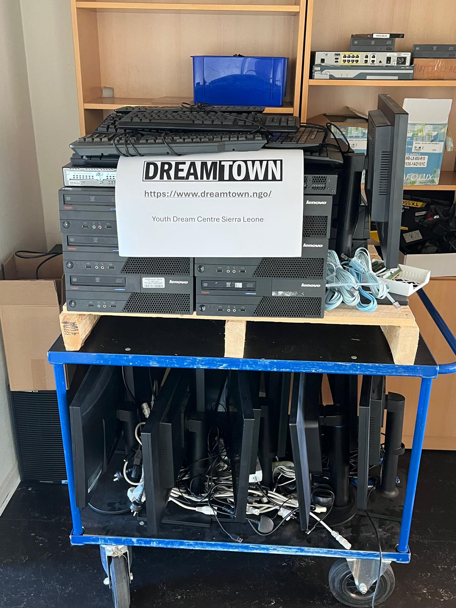2. Building and Configuring a Fog Server for Mercantec
In addition to work on the Sierra Leone project, we tackled internal IT projects at Mercantec itself.
We installed and configured a Fog server for the school’s IT department. This system automates reimaging of student lab machines and pushes complete OS images—including pre-configs, software, network settings, and user permissions—so machines come online ready to use.
We paid special attention to user management, creating a synchronization system that automatically generates and maintains user accounts for Mercantec’s many students, drastically cutting workload for the IT staff.
- Helpdesk: Windows images
- Programming: Ubuntu images
- Other departments: custom images tailored to their needs
3. Remote Desktop and 2FA System for Mercantec
We implemented a secure remote-desktop solution using TSplus on a dedicated server, so students can access their school machines from home.
To tighten security, we integrated two-factor authentication: on first login, students verify via a smartphone app before gaining access. This ensures only authorized users connect and meets modern security standards.
Viborg
1. Introduction
The city of Viborg, originally known as Vibjerg, is located in the center of Denmark’s mainland peninsula. The exact age of the city is unknown, however the first settlements were estimated to have been built around 10th century AD.
Today it is home to about 44.000 people. Many students come to Viborg to finish their education in the local university or at a vocational school, like the one we have visited during our exchange.
2. Activities
The city has two big lakes in the middle of it, with a bridge separating the two. In our free time we enjoyed running around the northern lake, and it is also possible to cross it with a sailboat.
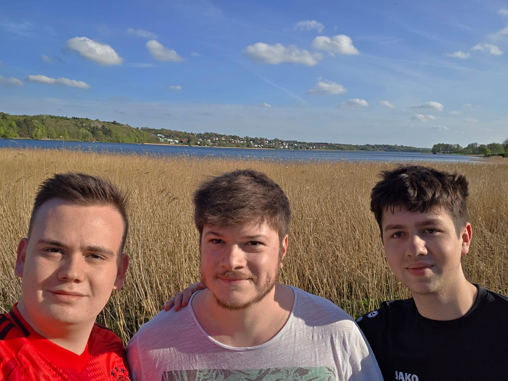Aside from the beautiful nature, the city center is full of various stores, restaurants, bars and small cafes where one can spend their free time. Viborg is also full of timeless architecture, like the Viborg Domkirke.
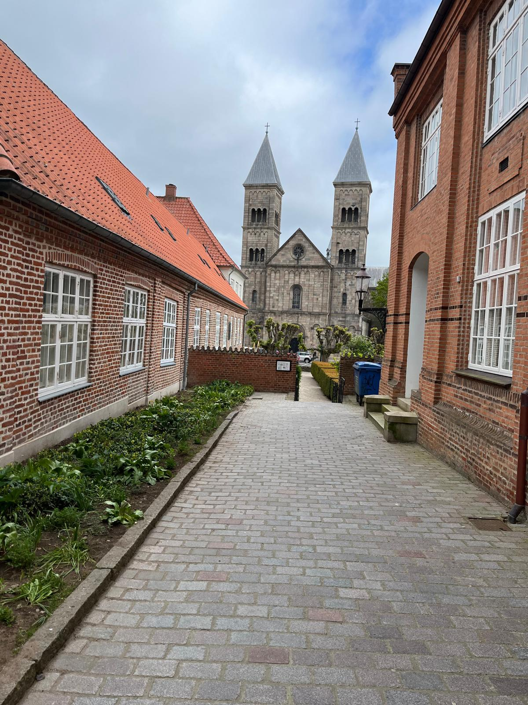It is also possible to travel to nearby towns by train, notable large cities in range are Aarhus and Aalborg. During our stay we visited Aarhus and Struer, but there are many more places worth seeing.
3. Climate
Our exchange took place between late April and late May. Despite it being unusually sunny during our stay (we only experienced two or three rainy days), the temperature never went above 25 degrees Celsius. From what the locals say it usually rains more, so it is recommended to take some weather proof clothing with you. It is also worth mentioning that it is almost always windy in most of Denmark, which can be seen as a relief on warmer days, but is also unpleasant at times.
4. Culture
While Danes are certainly very similar to Germans, and in extension, to most west European nations, we could certainly spot a couple of differences. For instance, the Danish people are unusually quiet in public places like trains, stores or just out on the street. This seems to be a broader trait that many Scandinavian people posses. They are likewise very friendly and will try their best to help you to the best of their ability, but you will mostly likely have to walk up to them and ask first. This is made easier by the fact that, almost everyone we tried talking to spoke very good English. Also of note is how proud the Danes are of their country. You can see many national flags hanging in front of people’s homes, and even more small flags are hung on walls or fences on occasions like birthdays.
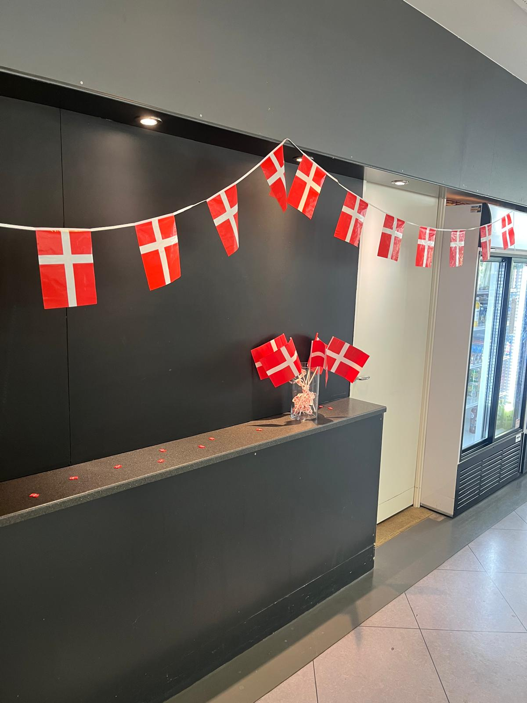Aarhus
A Day Trip to Aarhus – Denmark’s Vibrant Harbor City
Last week, we took a day trip from our quiet home base in Viborg to the lively city of Aarhus – Denmark’s second-largest city and a cultural hotspot on the east coast of Jutland. The train ride took just about an hour, and as soon as we arrived, the difference to Viborg was clear. Aarhus felt full of life: busy streets, a city center filled with cafés, shops, and lots of young people – very active and exciting.
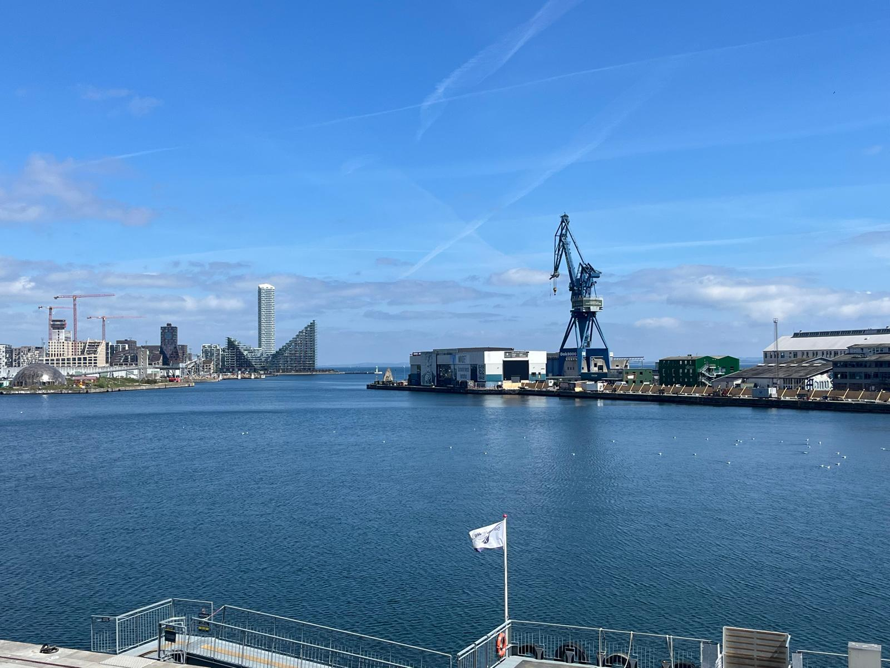We started by walking through the city center, enjoying the mix of historic charm and modern design that makes Aarhus feel so special. Then we headed to the harbor and walked along the coast. There were lots of people around, hanging out, playing football, or just relaxing by the water. We also passed some parts of the university and other shared spaces that showed how young and open the city feels.
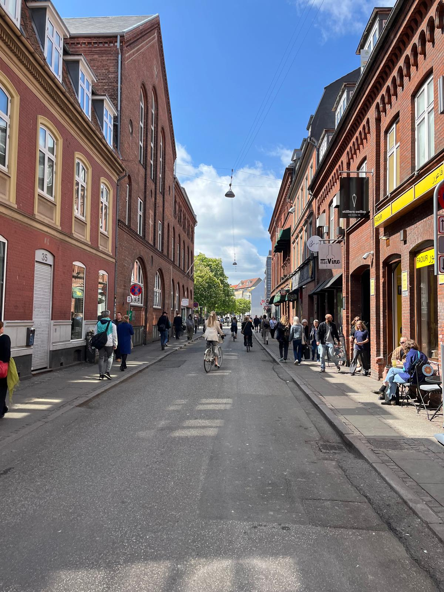After a short lunch break, we visited Den Gamle By – “The Old Town”. It’s an open-air museum that shows what life in Denmark looked like in the past. The museum is built like a real old town, with houses, shops, and streets from different time periods. As we walked around, we saw scenes from the 1700s, 1800s, and 1900s – even with people dressed in traditional clothes. It really felt like going back in time and was one of the best parts of the day.
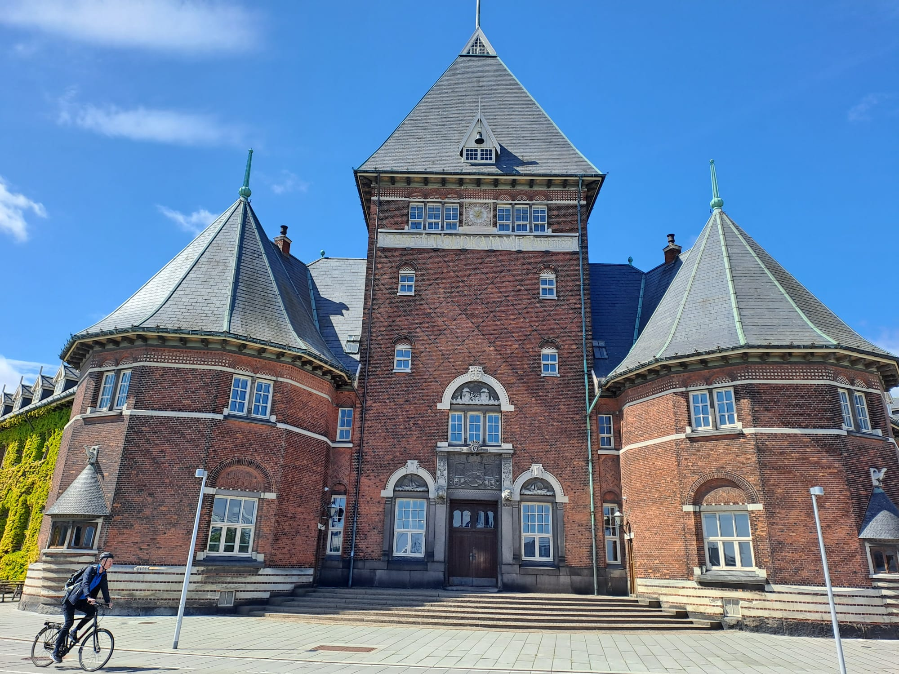To finish the trip, we went to Aarhus Street Food, near the harbor. It’s a cool indoor food market with food stalls from many different countries. The atmosphere was relaxed and fun, with people sitting together and enjoying meals from all over the world. It was a nice way to end the day before taking the train back to Viborg.
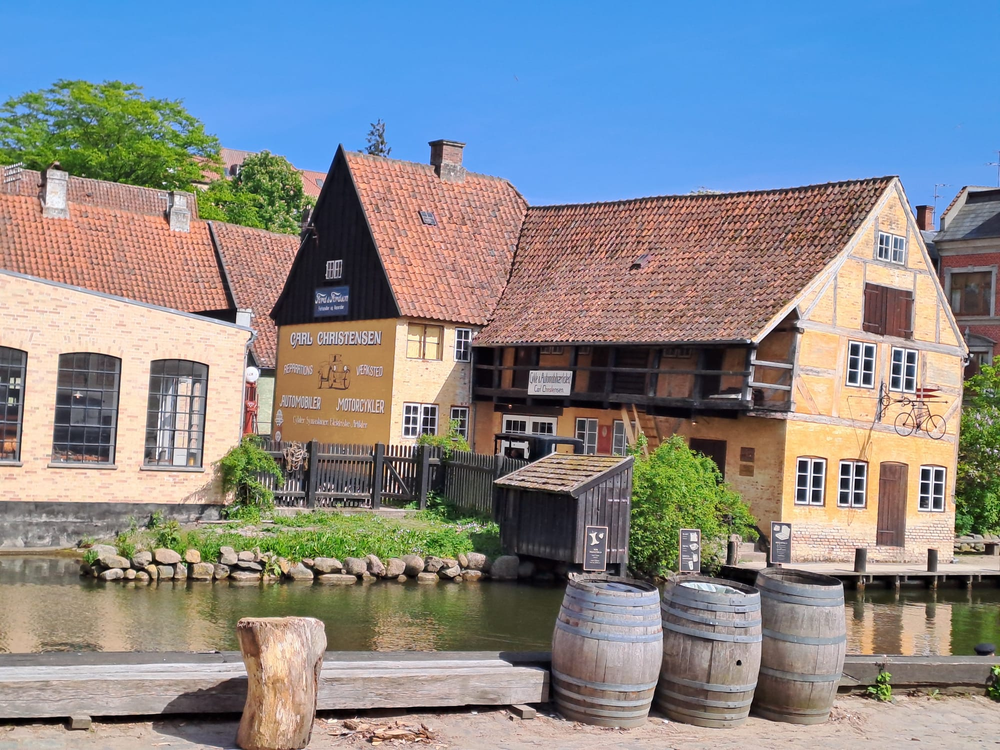Overall, our visit to Aarhus was full of interesting sights, good food, and a lot of energy – a great chance to experience a different side of Denmark.
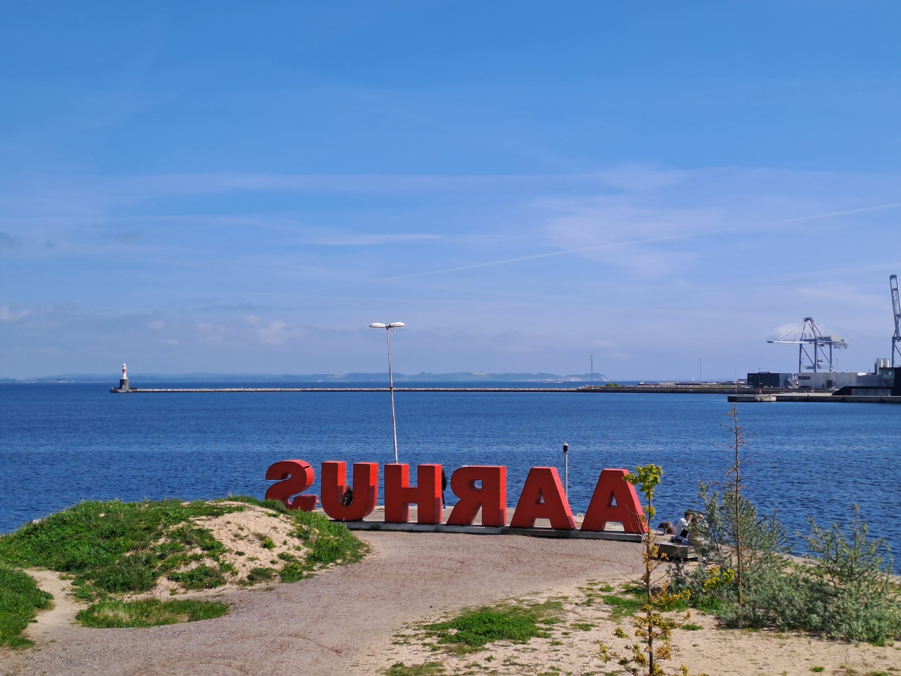Struer
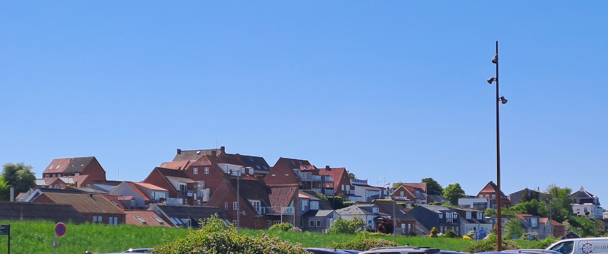Buildings near the coastline

A typical street in Struer
On our last weekend, our exchange student Chris invited us to visit his hometown Struer, which is located 50km to the west of Viborg. After our one-hour train journey through the beautiful Danish landscape of rivers and lakes we arrived at the magnificent Limfjord where Struer is located at.

After a two-hour walk along the shoreline and through the city, we went to den „Den Glade Pingvin“ for lunch. We ordered a local specialty dort, the pindebøf, which ist beef with a truly special seasoning. It was so delicious that Marko decided to go there again during our last week. If you ever happen to be there, taste it!
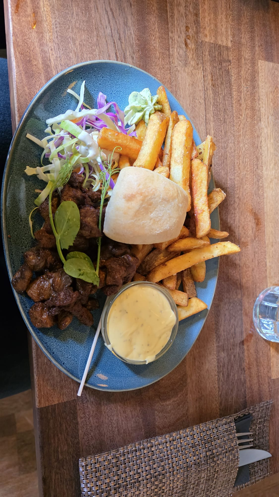After lunch we walked through the park and took a rest at a nice little pond while watching some ducks…

…and continued our way to the harbour of Struer.
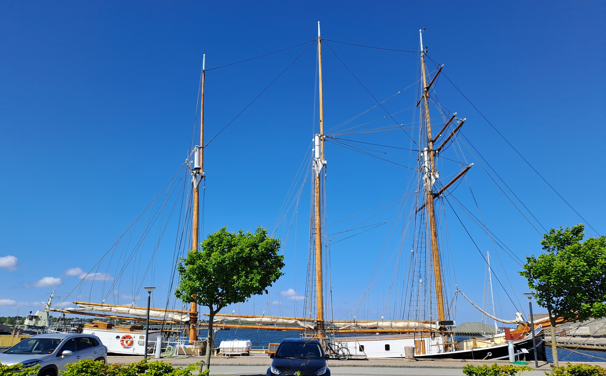We had a very good time in Denmark, meeting nice and open-minded people. If you are interested in visiting the country we have some advice for you:
- Be prepared to buy everything by card and not by cash.
- If you want to go by train or by bus there is a GPS-based app called Rejsekort which is a way more convenient system than we have in Germany.
- Please don't expect people to talk German and do not try to pay with Euro!